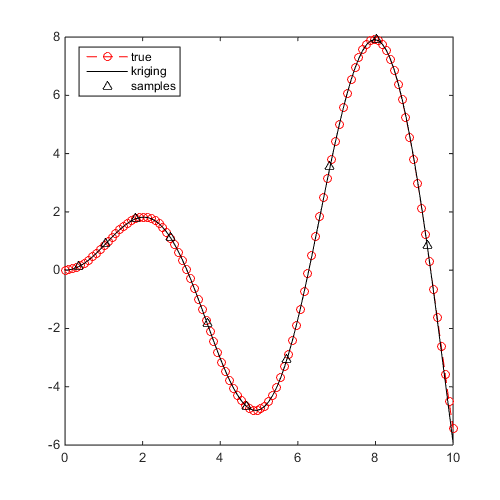
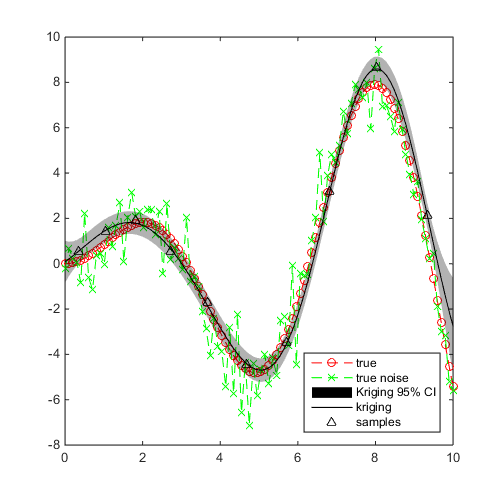
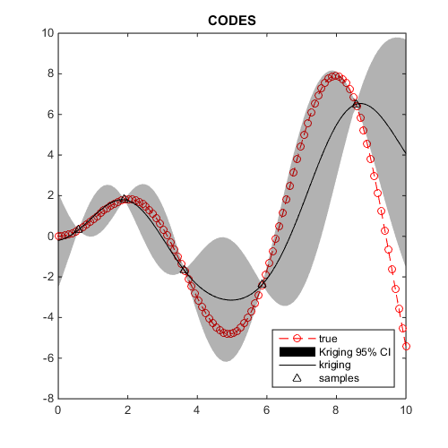

Examples / Meta-models / kriging
This file is a complete demo of the capability of the kriging class from the CODES toolbox.
Contents
Documentation
The documentation for the kriging class can be found here.
Set rng
Set random number generator seed:
rng(1)
Simple example
Define a simple sinusoidal problem:
f=@(x)x.*sin(x); x=CODES.sampling.cvt(10,1,'lb',0,'ub',10); y=f(x);
Build and plot a Kriging without CI:
kr=CODES.fit.kriging(x,y); figure('Position',[200 200 500 500]) plot(linspace(0,10,100)',f(linspace(0,10,100)'),'ro--') hold on kr.plot('prev_leg',{'true'},'psty','k^','lb',0,'ub',10,'CI',false)
Simple example for regression
Define a simple sinusoidal problem with noise:
f=@(x)x.*sin(x); f_noise=@(x)x.*sin(x)+normrnd(0,1,size(x,1),1); x=CODES.sampling.cvt(10,1,'lb',0,'ub',10); y=f_noise(x);
Build and plot a Kriging:
kr=CODES.fit.kriging(x,y,'regression',true); figure('Position',[200 200 500 500]) plot(linspace(0,10,100)',f(linspace(0,10,100)'),'ro--') hold on plot(linspace(0,10,100)',f_noise(linspace(0,10,100)'),'gx--') kr.plot('prev_leg',{'true','true noise'},'psty','k^','lb',0,'ub',10)
Compare CODES and DACE implementation
Define a simple sinusoidal problem:
f=@(x)x.*sin(x); x=CODES.sampling.cvt(5,1,'lb',0,'ub',10); y=f(x);
Build and plot both Kriging:
kr=CODES.fit.kriging(x,y); kr_dace=CODES.fit.kriging(x,y,'solver','DACE','theta',1,... 'theta_min',0.01,'theta_max',100); figure('Position',[200 200 500 500]) plot(linspace(0,10,100)',f(linspace(0,10,100)'),'ro--') hold on kr.plot('prev_leg',{'true'},'psty','k^','lb',0,'ub',10) title('CODES') figure('Position',[200 200 500 500]) plot(linspace(0,10,100)',f(linspace(0,10,100)'),'ro--') hold on kr_dace.plot('prev_leg',{'true'},'psty','k^','lb',0,'ub',10) title('DACE')

Compare gradients
x_t=unifrnd(0,10,5,1); [CODES_mean,CODES_var,CODES_mean_gr,CODES_var_gr]=kr.eval_all(x_t); [DACE_mean,DACE_var,DACE_mean_gr,DACE_var_gr]=kr_dace.eval_all(x_t); fprintf('\n%15s | %17s | %17s | %17s\n','Mean','Variance','Mean grad','Var grad'); disp(num2str([CODES_mean DACE_mean CODES_var DACE_var CODES_mean_gr DACE_mean_gr CODES_var_gr DACE_var_gr],'%8.3f %8.3f | %8.3f %8.3f | %8.3f %8.3f | %8.3f %8.3f'));
Mean | Variance | Mean grad | Var grad
-1.192 -1.189 | 1.196 1.193 | 3.164 3.168 | 4.703 4.694
1.340 1.340 | 0.314 0.319 | 1.399 1.399 | -0.115 -0.124
-3.087 -3.092 | 2.410 2.396 | -0.421 -0.422 | 0.768 0.767
4.435 4.443 | 7.405 8.074 | -2.717 -2.713 | 6.427 7.793
5.440 5.446 | 4.636 4.886 | -2.433 -2.427 | 7.715 8.516
References
Copyright © 2015 Computational Optimal Design of Engineering Systems (CODES) Laboratory. University of Arizona.
|
|
Computational Optimal Design of Engineering Systems |

|